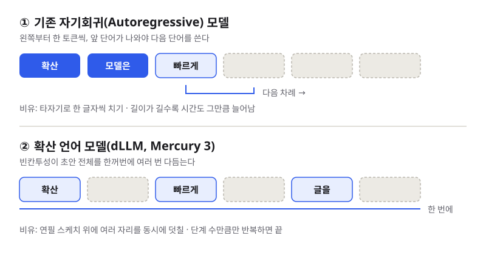
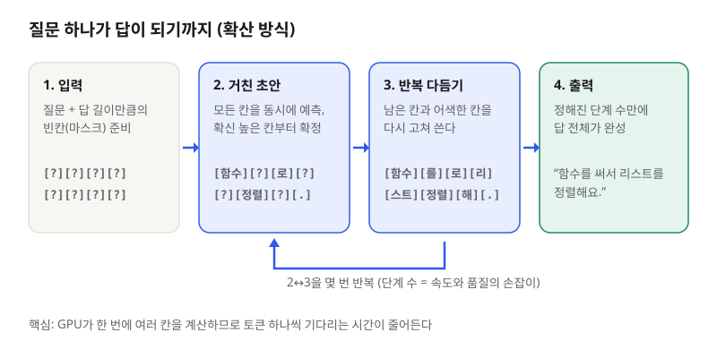

확산 LLM Mercury 3: 한 글자씩 대신 통째로 다듬어 쓰는 AI
- 미국 스타트업 Inception이 확산(diffusion) 방식 언어 모델 Mercury 3를 공개했고, 하루 사이 해외·국내 개발자 블로그와 커뮤니티에서 가장 많이 다뤄졌습니다.
- 보통의 LLM처럼 앞에서부터 한 토큰씩 쓰지 않고, 답 전체 초안을 여러 번 동시에 고쳐 쓰는 방식이라 회사 발표로는 초당 1,068토큰을 냅니다.
- OpenAI 호환 API로 바로 써 볼 수 있지만 성능 수치는 아직 회사 자체 측정뿐이라, 내 작업에 맞는지 직접 재 보는 습관이 중요합니다.
지난밤(한국 시간 10월 20일 새벽) Inception이 Mercury 3를 발표하자 Hacker News 토론, dev.to·PromptZone 같은 개발자 커뮤니티, 기술 블로그, 국내 AI 뉴스 큐레이션까지 같은 이야기를 했습니다. “글을 왼쪽부터 한 단어씩 쓰지 않는 LLM도 이제 덩치를 키울 수 있다”는 점, 그리고 그 결과 체감되는 속도가 화제의 중심이었습니다.
01한눈에 보기
우리가 쓰는 ChatGPT·Claude 같은 모델은 타자기와 비슷합니다. 첫 단어를 치고, 그걸 보고 두 번째 단어를 치고… 답이 길어질수록 그만큼 오래 걸리죠. Mercury 3 같은 확산 언어 모델은 화가가 캔버스 전체에 연필 스케치를 먼저 깔고, 여러 곳을 동시에 덧칠하며 완성해 가는 방식에 가깝습니다. 몇 번의 “덧칠 단계”만 거치면 답 전체가 한꺼번에 나오기 때문에, 같은 GPU에서 훨씬 많은 글자를 짧은 시간에 뽑아낼 수 있다는 것이 핵심 아이디어입니다.

· 자기회귀(Autoregressive) 모델: 지금까지 쓴 내용을 보고 다음 토큰 하나를 예측하기를 반복하는 방식. GPT·Claude 등 대부분의 LLM이 여기에 속합니다.
· 확산(Diffusion) 모델: 원래 이미지 생성 AI에서 쓰던 방식으로, 엉망인 상태에서 출발해 조금씩 “잡음”을 걷어내며 결과를 완성합니다. 이를 글에 적용한 것이 확산 언어 모델(dLLM)입니다.
· 컨텍스트 창: 모델이 한 번에 읽을 수 있는 입력 길이. Mercury 3는 100만 토큰입니다.
02어떻게 동작하나요
Inception은 내부 구조를 자세히 공개하지 않았지만, 확산 언어 모델의 일반적인 흐름은 이렇습니다. ① 입력: 질문과 함께, 답이 들어갈 자리를 빈칸(마스크)으로 채워 둡니다. ② 거친 초안: 모델이 모든 빈칸을 한꺼번에 예측하고, 그중 확신이 높은 자리부터 확정합니다. ③ 반복 다듬기: 남은 빈칸과 어색한 부분을 다시 예측해 고쳐 씁니다. 이 과정을 정해진 횟수만큼 반복하면 ④ 출력으로 완성된 답이 나옵니다.
속도의 비밀은 ②~③에서 GPU가 여러 자리를 동시에 계산한다는 데 있습니다. 자기회귀 모델은 토큰 100개를 쓰려면 100번 차례를 기다려야 하지만, 확산 모델은 다듬기 단계 수만큼만 돌면 됩니다. 반복 횟수는 속도와 품질 사이의 손잡이 역할을 합니다. dev.to의 한 분석 글에 따르면, 이렇게 앞뒤를 함께 보며 고치는 구조라서 빈칸 채우기·코드 수정처럼 “중간을 고치는” 작업에 특히 잘 맞을 수 있다고 합니다.

03왜 지금 화제인가요
Inception은 한국 시간 10월 20일 01:48, Business Wire 보도자료와 공식 블로그로 Mercury 3를 발표했습니다. 공식 발표에서 확인되는 내용은 다음과 같습니다. NVIDIA GPU에서 초당 1,068토큰, 첫 모델인 Mercury 1보다 40배 넘게 큰 규모(정확한 파라미터 수는 비공개), 100만 토큰 컨텍스트(직전 Mercury 2.5는 26만), 그리고 속도를 중시하는 GPT-6 Luna·Claude Haiku 5.5와 비슷하거나 더 낫다는 주장입니다. 가격은 입력 100만 토큰당 0.20달러, 출력 0.70달러이고 출시 기념 50% 할인이 붙었습니다.
커뮤니티가 반응한 지점은 숫자 자체보다 “확산 방식도 규모를 키울 수 있다”는 신호였습니다. 그동안 확산 언어 모델은 빠르지만 작고 덜 똑똑하다는 인식이 강했는데, 크기를 40배 키우면서도 속도를 유지했다는 것이 이번 발표의 요지이기 때문입니다. 동시에 “아직 회사 자체 측정뿐”이라는 신중론도 거의 모든 글에 따라붙었습니다.
04관련 나라·기업
| 구분 | 이름 | 어떤 관련이 있나 |
|---|---|---|
| 나라 | 미국 | Inception(캘리포니아 레드우드시티 발표), 비교 대상인 OpenAI·Anthropic, GPU를 만든 NVIDIA가 모두 미국 기업 |
| 나라 | 중국 | 커뮤니티에서 속도·가격 비교 상대로 DeepSeek V4.1 Flash가 자주 언급됨 |
| 기업 | Inception | Mercury 3 개발사. 공동 창업자 Stefano Ermon이 발표를 이끌었고, Microsoft의 벤처 투자 조직 M12 등이 투자 |
| 기업 | NVIDIA | 초당 1,068토큰은 NVIDIA GPU에서 잰 수치 |
| 기업 | OpenAI | 성능 비교 상대 GPT-6 Luna의 개발사. Mercury 3는 OpenAI 호환 API를 제공 |
| 기업 | Anthropic | 성능 비교 상대 Claude Haiku 5.5의 개발사 |
| 기업 | DeepSeek | Hacker News 댓글에서 지연 시간·성능 비교 대상으로 거론 |
05기존 방식과 무엇이 다른가
| 비교 항목 | 기존 자기회귀 LLM | Mercury 3 (확산 LLM) |
|---|---|---|
| 글 쓰는 순서 | 왼쪽부터 한 토큰씩 | 답 전체를 여러 번 동시에 고쳐 씀 |
| 속도를 좌우하는 것 | 출력 길이(토큰 수) | 다듬기 단계 수 |
| 발표된 속도 | 모델·서버마다 다름 | 초당 1,068토큰 (회사 측정, NVIDIA GPU) |
| 컨텍스트 / 최대 출력 | 모델마다 다름 | 100만 토큰 / 131,072토큰 (공식 문서) |
| 가격(100만 토큰) | 모델마다 다름 | 입력 $0.20, 출력 $0.70 (출시 할인 50%) |
| 공개 범위 | 오픈 가중치·API 모델 다양 | API 전용, 가중치 비공개 |
| 잘 맞는 일(현재 평가) | 긴 단계별 추론, 정교한 지시 따르기 | 실시간 검색·음성·튜터링, 빠른 에이전트 반복, 코드 수정 |
06직접 해 보기
Inception API 플랫폼에서 키를 발급받으면 공식 문서의 예제로 바로 호출할 수 있습니다(공식 발표 기준 신규 가입자에게 무료 토큰 제공). 모델 이름은 mercury-3이고, OpenAI와 같은 형식의 /v1/chat/completions 엔드포인트를 씁니다. 아래는 공식 문서의 빠른 시작 예제입니다.
export INCEPTION_API_KEY="your_api_key_here"
curl https://api.inceptionlabs.ai/v1/chat/completions \
-H "Content-Type: application/json" \
-H "Authorization: Bearer $INCEPTION_API_KEY" \
-d '{
"model": "mercury-3",
"messages": [
{"role": "user", "content": "What is a diffusion model?"}
],
"reasoning_effort": "medium",
"max_completion_tokens": 8192
}'해 볼 만한 실험: 같은 질문을 평소 쓰는 모델과 Mercury 3에 보내고 ① 답이 끝까지 나오는 시간, ② 기존 코드의 일부만 고쳐 달라는 요청의 정확도, ③ “3문장으로”, “JSON으로만” 같은 제약을 지키는지를 비교해 보세요. 예제처럼 reasoning_effort를 명시해 두면 비교가 공정해집니다. OpenRouter를 이미 쓰고 있다면 그쪽에서도 Mercury 3를 고를 수 있습니다.
07주의할 점과 한계
- 검증 전 수치: 속도와 벤치마크는 모두 Inception 자체 측정입니다. 여러 글이 독립 평가 사이트에 아직 Mercury 3 항목이 없다고 짚었습니다.
- 규모 비공개: 정확한 파라미터 수와 학습 데이터가 공개되지 않아, 왜 빠른지·얼마나 큰지 외부에서 따져 보기 어렵습니다.
- 약한 영역: byteiota에 따르면 일부 코딩 벤치마크에서는 Haiku 5.5보다 낮고, The Neuron 후기처럼 글자 수 같은 세밀한 제약을 놓치는 경우가 있었습니다. 긴 단계별 추론이 필요한 일에는 아직 신중하게 쓰는 편이 좋습니다.
- 가중치 비공개: 내 서버에 직접 올려 쓸 수 없고, API를 통해서만 이용 가능합니다.
- 이전 모델 정리: Unite.AI에 따르면 Mercury 2·2.5는 신규 가입이 막혔고 기존 고객도 11월 15일까지만 쓸 수 있으니, 이전 모델로 만든 코드가 있다면 옮길 준비가 필요합니다.
08정리
Mercury 3는 “LLM은 원래 한 단어씩 쓴다”는 당연한 전제가 바뀔 수 있음을 보여 준 모델입니다. 확산 방식이 덩치를 키우면서도 속도를 지켰다는 주장이 사실로 확인된다면, 실시간 음성 비서나 반복 호출이 많은 에이전트처럼 기다림이 사용자 경험을 망치는 서비스에서 선택지가 넓어집니다.
AI를 막 시작한 개발자라면 이 모델을 “정답”이 아니라 “다른 설계의 예시”로 보세요. 같은 API 형식으로 모델만 바꿔 끼울 수 있다는 점, 그리고 발표 숫자 대신 내 작업으로 직접 재 보는 습관이 중요하다는 점. 오늘 curl 한 줄로 그 두 가지를 같이 연습해 볼 수 있습니다.
09참고한 글
- Diffusion at Scale: Introducing Mercury 3 Inception 공식 블로그 · 2026.10.19 (미국 기준)
- Inception Launches Mercury 3, Setting a New Pareto Frontier in Speed and Intelligence Business Wire 보도자료 · 2026.10.20 01:48 KST
- Models - Inception Platform Inception 공식 문서
- Inception Releases Mercury 3, Its Flagship Diffusion LLM Unite.AI · 2026.10.20 03:01 KST
- Mercury 3: Diffusion at scale daily.dev (Hacker News 토론 요약) · 2026.10.20 03:21 KST
- Mercury 3: Inception Labs Scales Diffusion PromptZone · 2026.10.20 03:26 KST
- [중요] Diffusion 기반 LLM 'Mercury 3' 공개: 초당 1,000토큰 돌파 promppy · 2026.10.20 02:27 KST
- Mercury 3 Hits 1,068 Tokens/s — Check the Fine Print byteiota · 2026.10.20 06:08 KST
- New Mercury 3 model claims 8-fold speed edge over GPT-6 rivals Interesting Engineering · 2026.10.20 08:45 KST
- Inception’s Mercury 3: 40x Bigger, 8x Faster shattered.io · 2026.10.20 09:21 KST
- Mercury 3 Review: Inception's Diffusion AI Put to the Test The Neuron · 2026.10.20 10:33 KST
- Inception Releases Mercury 3 Diffusion LLM at 1,068 Tokens per Second MarkTechPost · 2026.10.20 12:32 KST
- Mercury 3 Does 1,068 Tokens/Second With a Diffusion LLM — Here's the Architecture Trick DEV Community · 2026.10.20
- Mercury 3 Grew 40x and Still Runs at 1,000 Tokens a Second OrcaRouter 블로그 · 2026.10.20 (시각 미표기, 근거 글 수에는 넣지 않음)